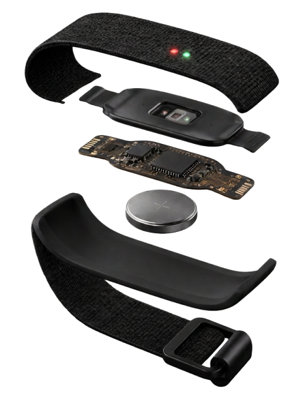
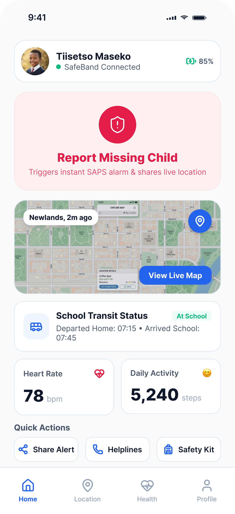
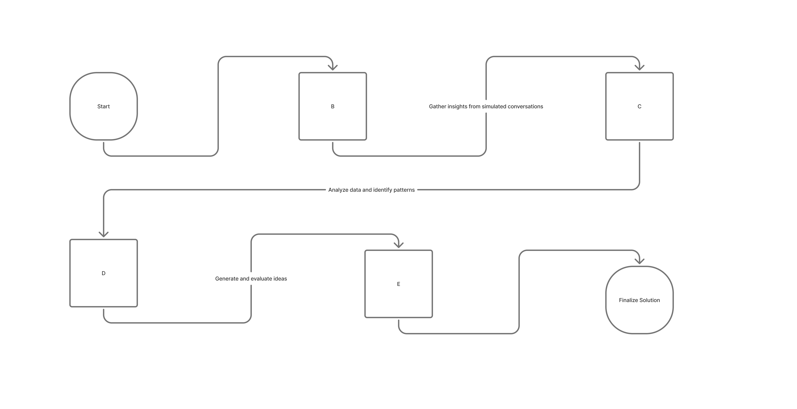

Safeband
Reimagining Child Safety
Problem statement
In South Africa, A Child Is Reported Missing Every Five Hours and according to Missing Children SA, about 77% of reported children are found. That means roughly 23% remain unaccounted for.
In townships, children often walk to and from school alone or use unregulated informal transport, which exposes them to crime and to getting lost, while their parents have no reliable way to know they arrived safely. The challenge is to design an affordable, easy-to-use solution that gives caregivers real-time peace of mind despite limited access to technology and varying levels of digital literacy.
Solution design
Introducing SafeBand, a wearable device paired with an app. It tracks location in real time and picks up vitals for signs of child distress, such as a spike in heart rate or panic, then alerts parents right away. If a child goes missing, a one tap feature sends a child full profile to SAPS in under a minute and creates a missing-child poster ready to share on social media.


AI Generated
Application Interface design
Approach and thinking process
